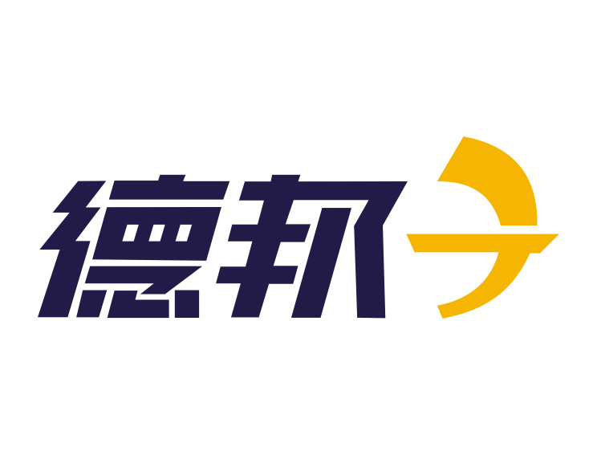

<ion-view view-title='人员信息同步'>
  <ion-content class='wechatLogin'>
  		
		<div id = 'putongPerson'>
			<button class="button" style="width:333px; height: 40px;" ng-click="sysInfo()">
  				同步人员信息
			</button>
			<br /><br />
			<button class="button" ng-click="createUserInfo()">
  				无法登录处理
  				<p style="color:red; margin-top: 0px;">（操作后相关信息，群和聊天记录会删除，谨慎操作）</p>
			</button>
		</div>
   </ion-content>
</ion-view>